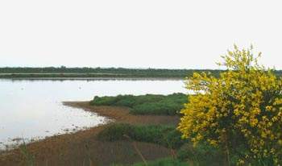

Le cri du dahu

Fiche d'enregistrement
- Date
- 28 décembre 2002
- Lieu
- Phare de Faraman
- Conditions
- Nuit, hiver, vent
- Approche
- 2h de marche et d'attente
Le cri du dahu n'a rien d'extraordinaire, sinon qu'il est difficile de l'enregistrer, car le dahu ne crie et ne sort que la nuit, et qu'il y a souvent du vent en Camargue, ce qui ne facilite pas l'enregistrement. L'enregistrement que j'ai fait a été réalisé en hiver, où l'animal est moins méfiant, le 28 décembre 2002, près du phare de Faraman. Je m'étais fait accompagner d'un assistant qui a porté le matériel et a été assez mal récompensé, car il a juste entendu l'animal, mais n'a même pas pu le voir, car il n'y avait pas un clair de lune très fort.
Vous pouvez apprécier cet enregistrement unique, car il a demandé deux heures de marche et autant d'attente dans le froid pour le faire.